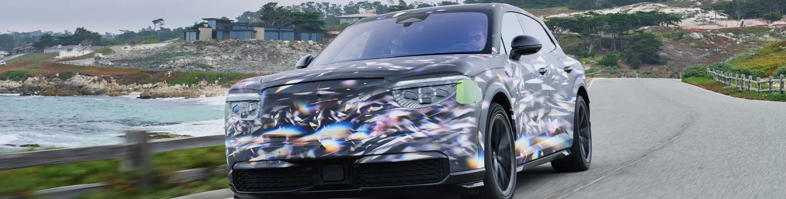
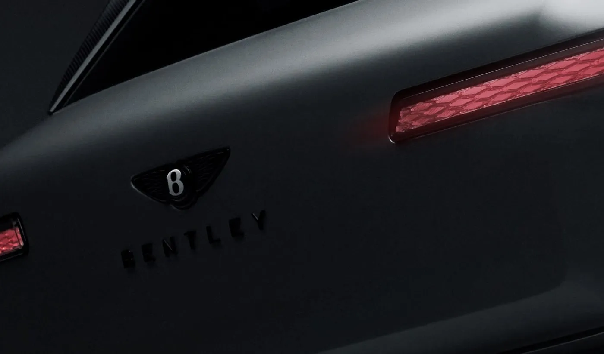
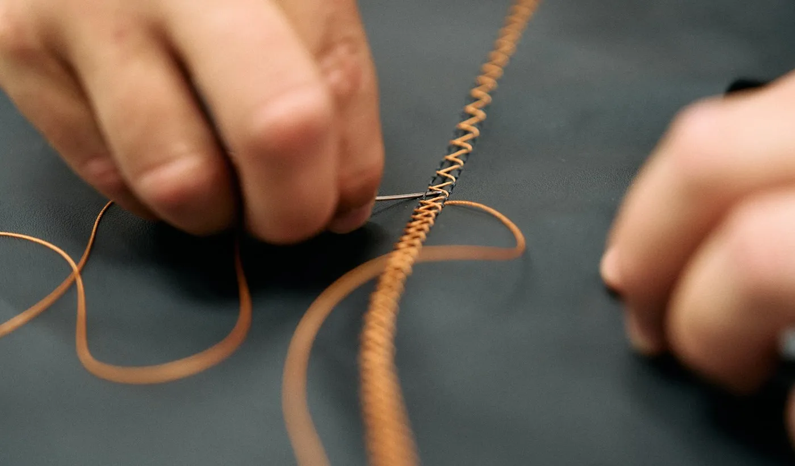
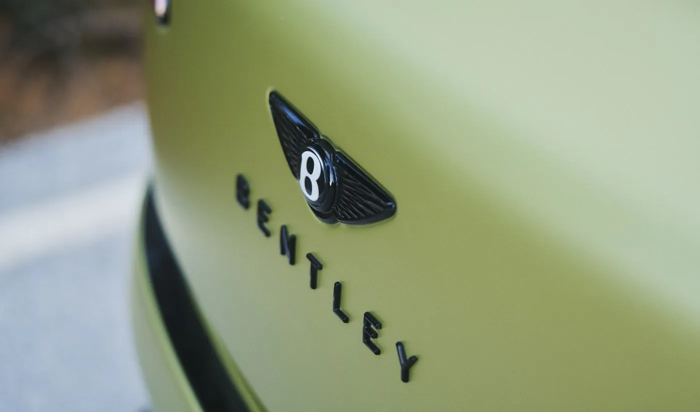

▲ 벤틀리의 영국 크루 본사. 1946년부터 가동된 이곳에 3억 5천만 파운드를 투자해 토르칼 전용 생산라인을 새로 지었다 ⓒ Wikimedia Commons
공개 시각까지 숫자로 맞췄다.
벤틀리가 첫 순수 전기 도심형 SUV '토르칼(Torcal)'을 오는 9월 23일 영국 현지시간 오후 7시 19분, 전 세계 동시 공개한다. 이 시각은 우연이 아니다. 벤틀리가 설립된 해인 1919년을 기념해 맞춘 숫자다. 그리고 이 차를 만들 크루(Crewe) 공장에는 3억 5천만 파운드(약 6,300억 원)가 투입됐다. 앞서 공개된 큐레이션 엔진이나 디자인 총괄 인사와는 별개로, 이번엔 공개 이벤트 자체와 그 뒤의 투자·생산 이야기를 짚어본다.

▲ 위장막을 두른 토르칼 테스트카. 벤틀리가 9월 23일 공개를 앞두고 몬터레이 카웨크에서 공개한 공식 주행 이미지다 ⓒ Bentley Motors
1. 왜 하필 '7시 19분'인가
벤틀리는 이번 공개 시각까지 브랜드 스토리텔링에 활용했다. 9월 23일 오후 7시 19분이라는 시각은 숫자 1919를 그대로 옮긴 것으로, 벤틀리가 1919년 월터 오웬 벤틀리에 의해 설립된 해를 가리킨다. 신차 공개 시점 하나에도 브랜드 서사를 담는 방식은, 토르칼이 단순한 신모델을 넘어 브랜드 역사의 한 챕터를 여는 차로 포지셔닝되고 있음을 보여준다. 공개 무대는 런던이지만, 발표는 전 세계 동시에 이뤄진다.
2. 80년 된 공장, 1946년부터 벤틀리를 만들었다
토르칼이 태어날 곳은 잉글랜드 체셔주 크루(Crewe)에 있는 벤틀리 본사 겸 생산시설이다. 이곳은 1946년부터 가동을 시작해 올해로 80년째 벤틀리의 심장부 역할을 하고 있다. 부지 면적은 약 52만㎡에 달하며, 현재 4,000명 이상이 근무하는 이 지역 최대 고용처 중 하나다. 컨티넨탈 GT, 플라잉스퍼, 벤테이가까지 지금까지 나온 모든 현대 벤틀리 모델이 이 한 곳에서 만들어졌다.
| 항목 | 내용 |
|---|---|
| 가동 시작 | 1946년 (2026년 기준 80주년) |
| 부지 면적 | 약 52만㎡, 실내 면적 약 16만 7,000㎡ |
| 근무 인원 | 4,000명 이상 |
| 기존 생산 모델 | 컨티넨탈 GT · 플라잉스퍼 · 벤테이가 |
| 이번 투자 | 3억 5천만 파운드 이상 (신규 도장공장 포함) |

▲ 벤틀리가 공개 전 배포한 토르칼 후미등 클로즈업 티저 이미지 ⓒ Bentley Motors
3. 3억 5천만 파운드, 어디에 썼나
벤틀리가 크루 공장에 투입한 3억 5천만 파운드 이상의 투자는 벤틀리 스스로 조달한 자체 자금이다. 이 투자에는 신규 도장공장(paint shop) 신설과 함께, 공장 부지 전반에 걸친 리노베이션 프로그램이 포함됐다. 토르칼 전용 생산라인 역시 이 투자의 핵심 축이다. 벤틀리는 럭셔리 브랜드 특유의 수작업 생산 방식을 유지하면서도, 전동화 시대에 맞는 신규 설비를 함께 들이는 방식을 택했다.
📍 '드림 팩토리' — 옛 R&D 건물의 변신
토르칼이 조립될 신규 라인은 1938년 준공된 건물을 개조해 만들었다. 이 건물은 초기에는 기계가공 공장으로, 가장 최근까지는 벤틀리의 R&D 워크숍으로 쓰였다. 이번 리노베이션 과정에서 건물 내부를 완전히 비운 뒤, 정밀하게 수평을 맞춘 바닥을 새로 깔았다. 이는 조립 중인 토르칼을 이동시키는 자율주행 유도 운반차(AGV) 운용을 위한 필수 조건이다.
4. 전량 수작업 + AGV, 두 시대의 결합
토르칼은 이 새 라인에서 전량 수작업으로 완성된다. 벤틀리가 100년 넘게 지켜온 장인 조립 방식은 그대로 유지하되, 부품과 반제품을 라인 사이로 옮기는 과정에는 AGV(자율주행 유도 운반차)를 도입해 효율을 높였다. 전통적인 수공예와 최신 자동화 기술을 한 라인 안에 공존시킨 셈이다. 이 방식은 벤틀리가 전기차 시대에도 '핸드메이드 럭셔리'라는 정체성을 포기하지 않겠다는 신호로 읽힌다.

▲ 크루 공장 장인이 가죽 시트를 손바느질하는 모습. 토르칼 역시 이런 수작업 공정을 그대로 거친다 ⓒ Bentley Motors
5. 네 번째 모델 라인, 첫 전기차라는 무게
토르칼은 벤틀리에게 컨티넨탈, 플라잉스퍼, 벤테이가에 이은 네 번째 모델 라인이다. 벤테이가가 2015년 등장한 이후 10년 넘게 세 축 체제가 유지돼왔다는 점을 감안하면, 새 라인이 추가되는 것 자체가 드문 일이다. 그리고 그 첫 번째 자리를 순수 전기 도심형 SUV가 차지했다. 벤틀리가 전동화 전환의 상징으로 이 차를 앞세우고 있다는 뜻이다.

▲ 벤틀리가 공개한 또 다른 티저 이미지 속 차체 컬러와 엠블럼 디테일 ⓒ Bentley Motors
✅ 함께 보면 좋은 벤틀리 토르칼 관련 기사
· 토르칼에 탑재되는 소프트웨어 시스템 '큐레이션 엔진'의 4가지 모드는 별도 기사에서 다뤘다
· 토르칼의 UX 디자인을 이끈 인물이 최근 벤틀리 외장 디자인 총괄로 선임된 인사 소식도 있다
· 이번 기사는 9월 23일 공개 이벤트 자체와 3억 5천만 파운드 투자, 크루 공장의 80년 생산 이력에 집중했다
공개 행사와 투자 관련 원문은 벤틀리 공식 미디어센터에서 확인할 수 있다. 벤틀리 미디어센터 바로가기
6. 9월 23일 이후 남는 질문들
공개 시각과 투자 규모, 공장 이력까지는 확정된 사실이지만, 공식 가격과 본격 양산 시점 등은 9월 23일 공개 이후에나 구체화될 전망이다. 다만 파워트레인 스펙은 정식 공개를 앞두고 외신 시승·취재를 통해 상당 부분 흘러나온 상태다. 벤틀리가 아직 공식 확정 발표를 하지 않은 수치이므로 참고용으로만 볼 필요가 있지만, 복수 매체가 공통적으로 보도한 내용은 다음과 같다.
| 항목 | 내용 |
|---|---|
| 플랫폼 | 폭스바겐그룹 PPE(프리미엄 플랫폼 일렉트릭) — 포르쉐 카이엔 일렉트릭, 아우디 Q6 e-트론과 공유 |
| 출력 | 듀얼 모터 AWD, 약 850마력(PS) — 벤틀리 역사상 가장 강력하고 빠른 양산차로 예고 |
| 배터리·항속거리 | 113kWh 배터리, WLTP 기준 약 595km(370마일) |
| 공차중량 | 약 2,700kg |
이 수치들은 벤틀리 공식 자료가 아니라 Carscoops·오토카(Autocar) 등 외신이 사전 시승과 취재를 통해 보도한 내용이라는 점을 감안해야 한다. 다만 여러 매체가 독립적으로 같은 범위의 출력·배터리 용량·항속거리를 보도하고 있어, 9월 23일 공식 발표와 크게 다르지 않을 가능성이 높다. 벤틀리는 첫 전기차를 그냥 신차로 취급하지 않고, 공개 시각부터 공장 투자까지 브랜드 역사와 엮어서 이야기하는 방식을 택했다. 80년 된 공장의 옛 R&D 건물을 허물지 않고 개조해 새 라인을 만든 것도 같은 맥락이다.
7. 요약
벤틀리 첫 순수 전기 SUV '토르칼'이 9월 23일 오후 7시 19분(영국 현지시간) 런던에서 세계 동시 공개된다. 공개 시각은 벤틀리 창립연도인 1919년을 기념해 맞춘 숫자다.
토르칼은 1946년부터 가동된 크루 공장에서 만들어지며, 벤틀리는 이 공장에 3억 5천만 파운드 이상을 투자해 신규 도장공장과 1938년 준공 건물을 개조한 전용 생산라인을 마련했다. 생산은 전량 수작업으로 이뤄지되 AGV가 함께 도입된다.
토르칼은 컨티넨탈·플라잉스퍼·벤테이가에 이은 벤틀리의 네 번째 모델 라인이자 첫 전기차로, 브랜드 전동화 전환의 상징적 모델이 될 전망이다.